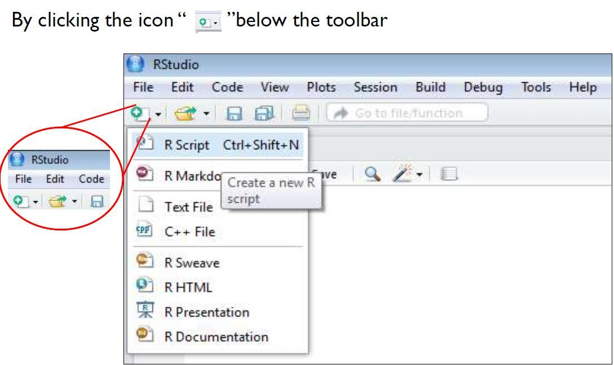
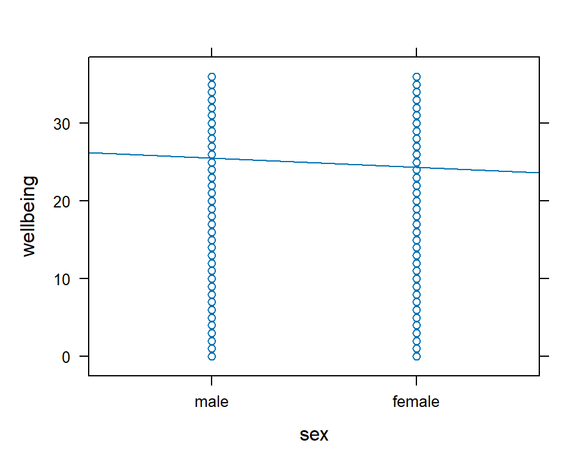
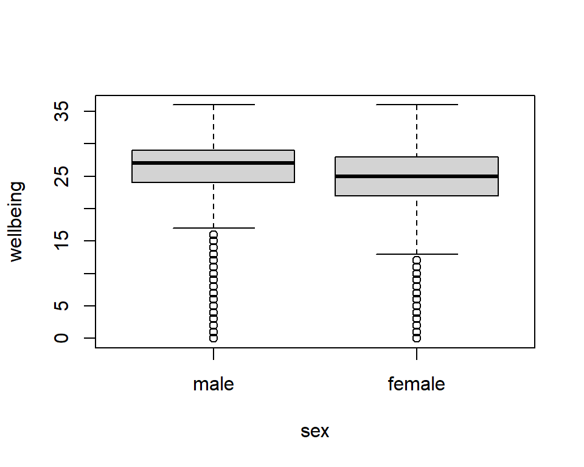
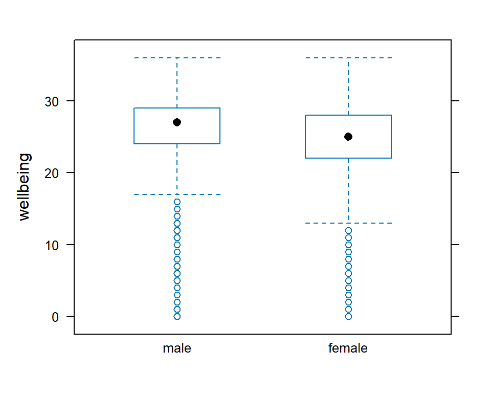
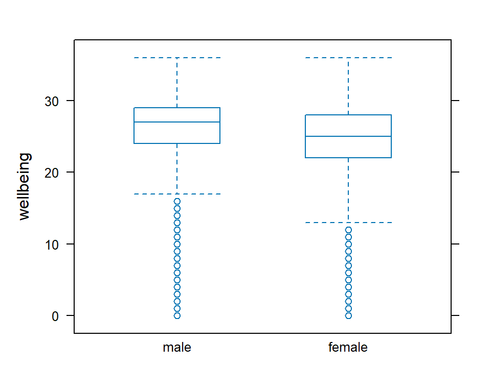
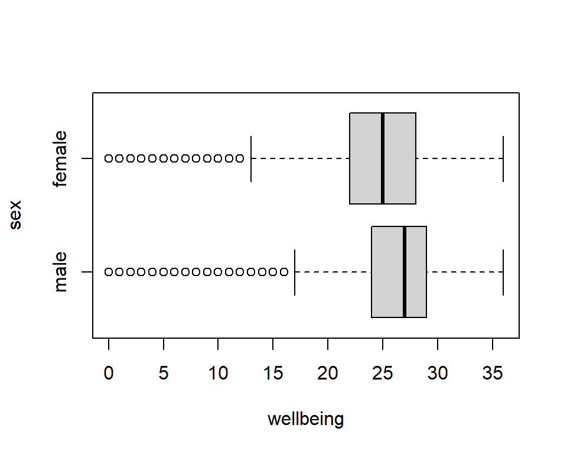
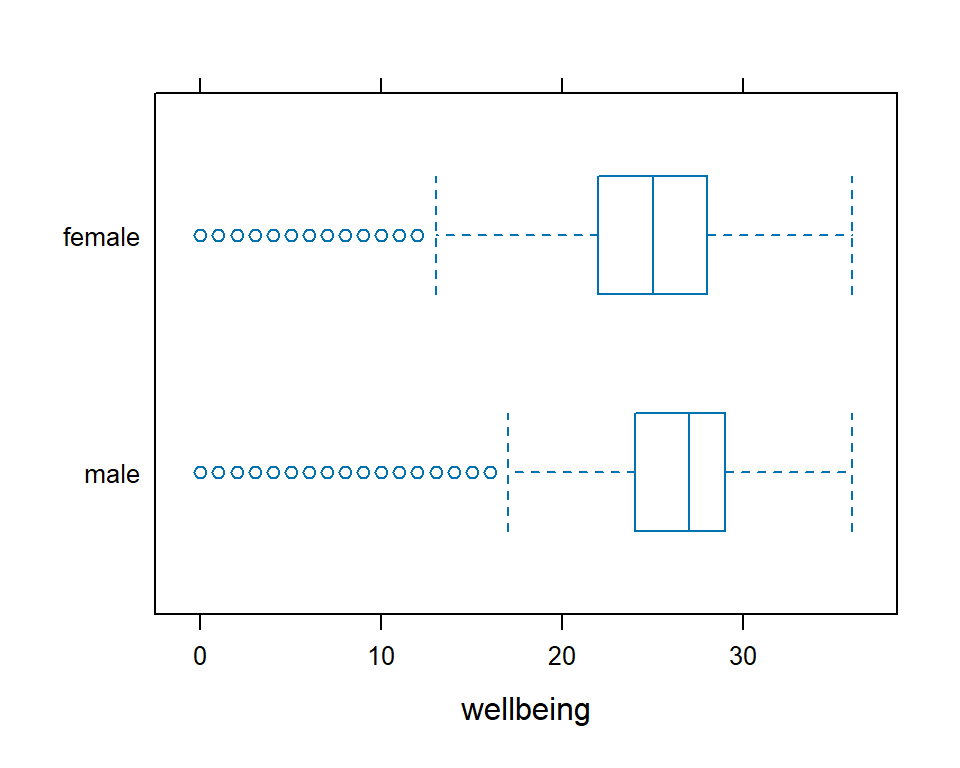

Worksheet 8
Timetable week: 13
Topic: "Modelling numeric outcomes 2: multiple predictors"Intro
Last week we’ve learnt how to write a simple linear regression model to assess the statistical relationship between two numeric (continuous) variables. The aim of the simple linear regression model is to predict the expected values of one continuous (numeric) variable (e.g. a child’s age) from another continuous (numeric) variable (e.g. the child’s height). This week we begin expanding this basic approach into more complex models by considering some changes to the predictor (independent) variable. First, we look at what happens if our aim is to model variation in a numeric outcome variable from a dichotomous (binary) predictor variable (e.g. yes/no answers, a binary sex variable, etc.); Then, we look at examples where the predictor variable is categorical, with more than just two categories; Finally, we add several pradictor variables into the model to account for the combined effect of those several factors on our outcome of interest.
For continuity, we will make use of some of the variables from previous weeks, from the same data from Wave 8 (2016-2017) of the UK Household Longitudinal Study (UKHLS/Understanding Society) Main Survey.
Readings
Core readings:
- Gelman et al. (2020): Chapter 10 and Appendix B (pp. 131–150; 493–496)
Secondary readings:
- Agresti (2018): Chapters 10–11 (pp. 287–337)
Further readings:
- Gelman et al. (2020): Chapters 11 and 12 (pp. 153–211)
- Agresti (2018): Chapters 12–14 (pp. 351–450)
Exercise 0: Setup
Open the
R Studiointerface by clicking on the SOC2069-Statistical-analysis.Rproj file included in the SOC2069-Statistical-analysis project folder that you downloaded from Canvas in Lab6. The folder should be stored on your Newcastle University OneDrive and accessible from any computerIf you haven’t yet downloaded the project folder in TW11 (Lab6), then download it from Canvas. Tip: If you haven’t completed the Lab6 worksheet, it will be difficult to follow the next steps; please go through Exercise 1 and 2 of Lab6).
Create a new blank
Rscript for this lab session and call it Lab8.RCheck Exercise 1, Task 2 of Lab6) if you need help with this. Tip:

or

Write a comment line at the top of the new script to briefly detail what the script is about (e.g. # Script for Lab x, Week y). Tip: in
Rscripts the hashtag (#) denotes that the text following it on the same line is just a comment, not a programming command.Load user-written
Rpackages we commonly use with thelibrary()functionCheck Exercise 1, Task 4 of Lab6 if you need help with this. Tip: You may need to first install the package with the
install.packages()function if it’s not yet installed# If you need to first install the packages, remove the hashtag # from in front of the `install.packages()` command to un-comment it # and run it # install.packages(c("tidyverse", "mosaic", "sjmisc")) library(tidyverse) library(mosaic) library(sjmisc)# We'll also install a new package that contains some nice functions # for better formatted table outputs and graphing of regression models install.packages("jtools") library(jtools)
Load the ukhls_w8.rds dataset to an object in the session Environment; let’s call that object “ukhls”:
ukhls <- readRDS("ukhls_w8.rds")Check Exercise 1, Task 4 of Lab6) if you need help with this. Tip: Specifying only the file name without a path assumes that you have followed Step 1 above correctly and your working directory is the RProject. If not, go back to Step 1.
If you have accidentally overwritten the original dataset with incorrect transformations to variables, you can download the original dataset again from here: https://cgmoreh.github.io/SOC2069/SOC2069-Statistical-analysis/ukhls_w8.rds. Save it to the project folder, replacing the old dataset.
Exercise 1: The effect of gender on subjective wellbeing
About 60 minutes
We will follow the same “0 + 5”-step workflow as in Lab7. First (“Step 0”), state the research question; then (Step 1) find and understand variables (data) that help you answer that question; then (Step 2) modify (wrangle) any variables that need to be adjusted to help the analysis and interpretation; then (Step 3) describe how your outcome variables and main predictor variable(s) are related. This will help with the interpretation of the statistical results and with identifying any further changes to the variables that may be needed (returning to Step 2 again). You may also wish to check the relationship between your predictor variables if you have more than one; then (Step 4) apply the statistical model that is most appropriate to answer the “research question”; and finally (Step 5) summarise the results from your analysis using tables, figures and your own words. In each exercise, we’ll go step-by-step.
Step 0: Formulate your “research question”
The title of the exercise is almost a reasonable sounding research question. We want to understand: _“Does gender have an effect on subjective wellbeing”? Or, formulated differently: “Are there any gender-based differences in subjective wellbeing? Or:”Are women happier than men?“.
All of these are similar in their aim and the methods required to answer then, but choosing one over the other means that we need to pay attention to how we interpret our results and formulate our answers later on.
Step 1: Find, describe and understand your variables
Last week (see Lab7) we got to know how subjective wellbeing is defined and operationalised, and which variable in our UKHLS dataset measures it: scghq1_dv.
The other variable we need to answer our question is one that measures respondents’ gender. We have a variable in the dataset called sex that best approximates this (we’ll disregard conceptual differences between sex and gender here; we could have used sex instead of gender in our research question to be more precise, but that would have sounded a bit awkward and probably changed its meaning completely ).
We have already looked at the sex variable in Lab6, Task 3.1. So there’s nothing new that we need to do here, but let’s look again at some descriptive statistics for these two variables:
Note
You have already loaded the UKHLS dataset into your RStudio Environment in Exercise 0 above. You can check the Environment pane in RStudio to make sure that the data is there (recall, we gave it the name “ukhls”).
Remember, you can check the list of variables in the dataset on this page: https://cgmoreh.github.io/SOC2069/Data/ukhls_w8. (Tip: you can search for keywords in the usual way: ctrl+F on Windows / command+F on Mac, and search for “wellbeing”).
### Complete the code below
# Descriptive statistics for 'scghq1_dv':
...
# Descriptive statistics for 'sex':
...Questions
Examine the descriptive results from the tables and charts you’ve produced and answer:
- What is the average (mean) subjective wellbeing score of the respondents in the dataset?
- What does it mean to have a score of 32 on the scghq1_dv scale? Tip: In Lab7 we checked what exactly the scghq1_dv variable measures by cross-checking on the UKHLS/Understanding Society website.
- Are there more women or men in the dataset?
- What is the percentage of women in the dataset?
- Do we need to transform/recode any of the variables? If so, why and how?
Step 2: Modify your variables (if needed)
In Lab7 we recoded the values on the scghq1_dv variable so that higher values would equate higher subjective wellbeing. This just makes the interpretation of the variable more logical. We also renamed it to wellbeing just because the original variable name is ugly and a bother to type. We can quickly do that again here (tip: check Lab7, Ex1, Step2 for more explanation):
# extract the highest value (check in the Environment if the extracted value is correct)
maxvalue <- max(ukhls$scghq1_dv, na.rm = TRUE)
# reverse the scale
ukhls <- ukhls %>%
mutate(wellbeing = maxvalue - scghq1_dv)
# quickly compare the two variables to make sure the recoding was correct
ukhls %>%
select(scghq1_dv, wellbeing) %>%
summary()
# We should get this output: scghq1_dv wellbeing
Min. : 0.00 Min. : 0.00
1st Qu.: 7.00 1st Qu.:23.00
Median :10.00 Median :26.00
Mean :11.12 Mean :24.88
3rd Qu.:13.00 3rd Qu.:29.00
Max. :36.00 Max. :36.00
NA's :3351 NA's :3351 Step 3: Describe the relationship between your variables
In this step we’ll learn something (relatively) new. When we described the relationship between two numeric variables (wellbeing and age) in Lab7, we did it using a scatterplot to which we added a linear regression fit line (a.k.a. a line of best fit, least squares line; see Agresti (2018: 250-255), Gelman et al.(2020: 86-87)).
Using a scatterplot to visualise the linear relationship between a dichotomous(binary) variable (sex) and the numeric variable wellbeing is not the best approach, but it can be done.
Scatterplots with fit line
xyplot(wellbeing ~ sex, type = c("p", "r"), data = ukhls)
As with the wellbeing by age scatterplot in Lab7, it doesn’t look great because the wellbeing scale is rather small (0-36 discrete points) and the dispersion within genders is broad; with other variables it may look a bit better and more useful. But the scatter is as we would expect: since we only have two categories/groups in the variable sex (males and females), the scatter dots are vertically aligned.
Nonetheless, with a linear regression line fitted over the scatterplot we can sense that the average wellbeing score of women is somewhat lower than that of the men.
Boxplots to compare group medians
It’s more appropriate to use boxplots when plotting numeric variables against categorical variables, and this is what you should use in the assignment to demonstrate that you know how to pick the most appropriate visualisation method.
We’ve already met the boxplot in Lab7, Ex1, Step 1, where we used it to visualise the scghq1_dv by itself, as a counterpart to a histogram. But boxplots are more useful when comparing the distributions of different categories within a categorical variable against a numeric scale (such as the wellbeing score of males vs. females within the sex variable).
Functions such as boxplot in base R or the bwplot from {mosaic} that we are already familiar with can be used to make boxplots. They make the following plots:
# with base R `boxplot`
boxplot(wellbeing ~ sex, data = ukhls)
# with `bwplot`
bwplot(wellbeing ~ sex, data = ukhls)
# with `bwplot`, adding the setting ' pch = "|" ' which transforms the median dot into a line, like in `boxplot`, making the comparison easier
bwplot(wellbeing ~ sex, data = ukhls, pch = "|")
We can also plot the boxplots horizontally, which may be more appropriate with some variables and can further ease visual comparisons. The additional settings required for each approach are:
# with `boxplot`, add "horizontal = TRUE"
boxplot(wellbeing ~ sex, data = ukhls, horizontal = TRUE)
# with `bwplot` we can simply reverse the order of variables and place our categorical (factor, dichotomous) variable first. It's as if we'd say that we're modelling the sex variable on wellbeing, rather than the other way around.
bwplot(sex ~ wellbeing, data = ukhls, pch = "|")

You can choose whichever option you prefer and find most useful for the variables you are modelling.
We can now see more clearly that there is some sex-based difference in wellbeing scores, with women reporting slightly lower wellbeing than men but also showing slightly higher standard variation in their scores.
Descriptive statistics by group
Visual assessment is always useful because we are visual creatures after all; but our eyes can deceive. We need to look at and compare some numbers too if we want precision.
We already know how to produce descriptive statistics for numeric variables, and we can easily produce them by categories of categorical variables. Let’s use the favstats command from the {mosaic} package again:
mosaic::favstats(wellbeing ~ sex, data = ukhls) sex min Q1 median Q3 max mean sd n missing
1 male 0 24 27 29 36 25.52269 5.155753 16017 1908
2 female 0 22 25 28 36 24.36095 5.796800 19925 1443Note how compared to our previous use of favstats for single variables, when we use it to compare categories of categorical variables against a numeric scale, we place our variables on either side of the ~ operator, just as we would do in the linear regresison model command lm().
The table lists the usual descriptive statistics for wellbeing for men and women separately.
Question
So what does the table tell us about differences in wellbeing between sexes? For brief definitions of each statistic in the table and the boxplots, see the Descriptive statistics lecture slides
Step 4: Model the relationship between your variables
Now we have some sense of gender-based differences in subjective wellbeing (or, whether women are happier than men) in our data, but if our aim is (a) to quantify these differences and be able to make predictions of wellbeing-scores knowing one’s gender, and (b) to check the probability that these differences do not only appear in our data by pure chance (measurement error) but they actually exist in the wider UK population from which our sample data was drawn, then we need to apply a statistical model.
In this exercise, we assume that there is a linear relationship between sex and wellbeing and thus model it using the same linear regression formula that we are familiar with. Let’s fit the model and save the results to an object called model_ex1 (to stand for our Exercise 1 model), then ask for a summary() of the model results:
model_ex1 <- lm(wellbeing ~ sex, data = ukhls)
summary(model_ex1)
Call:
lm(formula = wellbeing ~ sex, data = ukhls)
Residuals:
Min 1Q Median 3Q Max
-25.523 -1.523 0.639 3.639 11.639
Coefficients:
Estimate Std. Error t value Pr(>|t|)
(Intercept) 25.52269 0.04362 585.13 <2e-16 ***
sexfemale -1.16174 0.05858 -19.83 <2e-16 ***
---
Signif. codes: 0 '***' 0.001 '**' 0.01 '*' 0.05 '.' 0.1 ' ' 1
Residual standard error: 5.52 on 35940 degrees of freedom
(3351 observations deleted due to missingness)
Multiple R-squared: 0.01082, Adjusted R-squared: 0.0108
F-statistic: 393.2 on 1 and 35940 DF, p-value: < 2.2e-16We are already familiar with this output from Lab7, where we modelled wellbeing as a function of age. One difference that you might have spotted if you looked carefully is the name of the predictor variable shown in the output: sexfemale. What does this represent? The women? And if so, where are the men?
Factors and other variable types in R
R detects that the sex variable is saved in the dataset as being a categorical variable (i.e. a factor in the language of R). See below for more information about data/variable types in R:
Click to View

We can check the type of each variable using the command class(); with the str() command we query the “structure” of the variable, which prints some more details about the variable; if we believe that a variable is of a certain type but we want to check, we can use functions such as is.factor, is.numeric, is.character etc., which will return a logical value (TRUE or FALSE):
# Check a variable's type/class:
class(ukhls$sex)[1] "factor"# Check the structure of the variable:
str(ukhls$sex) Factor w/ 2 levels "male","female": 2 2 2 1 2 2 1 1 2 1 ...
- attr(*, "label")= chr "sex"# Check if a variable is a 'factor':
is.factor(ukhls$sex)[1] TRUEAutomatic releveling of factor variables in regression models
Because R detects that the sex variable is as a factor, it treats it as such. When lm() encounters a factor variable with two levels/categories, it creates a new variable based on the second level. In our example, the second level is female, and ‘sexfemale’ was created automatically. It is a binary variable that takes the value 1 if the value of ‘gender’ is female, and 0 if the value of ‘gender’ is not female (i.e. is male).
The level coded as 0 is called the reference level or base level and is “absorbed” by the intercept, which is why it is not showing as a separate level/category in the list of coefficients. Just like in the wellbeing-by-age model in Lab7, where the intercept referred to age=0 (or to median age after we median-centred the age variable to give the intercept more meaning), here the intercept value refers to sexfemale = 0 = male.
The same automatic releveling is done in the background when the factor variable has more than two levels/categories, as we’ll see later.
To avoid mistakes, it is often safer to coerce a variable to a given measurement type within the model itself, which has the added advantage that the labels in the summary output will be more easily legible. We can coerce a variable to factor type with the as.factor() function. Compare the output from the command below to what we got previously:
# ! This will overwrite the previous model object
model_ex1 <- lm(wellbeing ~ as.factor(sex), data = ukhls)
summary(model_ex1)You will find that nothing has changed apart from the label for the female level; all the coefficients are the same.
If we preferred to get the regression (slope) coefficient for males instead of females, we could first relevel the sex variable by hand and then refit the model. In case of dichotomous factors (with only two levels) there is no substantive reason to do this, because the two coefficients mirror each other: if females are expected to score -1.16 points lower on subjective wellbeing compared to the males, then the males logically are expected to score 1.16 points higher than the females.
Setting the reference category manually will be more useful with polytomous factors (those with more than two levels), as we’ll see in Exercise 2.
Step 5: Present and interpret your findings
We already gave a partial interpretation of the results in the previous paragraph. As we noted, the intercept here represents the males, or more specifically the average subjective wellbeing score for male respondents, and the slope coefficient for females tells us that women score 1.16-point lower than men. The regression equation is thus:
\[\widehat{wellbeing} = 25.52 - 1.16 \times 1(for\;female)\]
\[\widehat{wellbeing} = 25.52 + 1.16 \times 0(for\;male)\]
This is the same information that we got from the summary statistics by group that we did in Step 1. There we saw that the average score for males was 25.52 and the average for females was 24.36; if we ask R to calculate 24.36 - 25.52 for us we get -1.16, which is the regression coefficient for females from the model output.
But the regression modelling framework allows us to answer some deeper questions. Our aim is always to extrapolate from our sample data to the wider population from which the representative sample was drawn (here, the UK population). The Standard Error, the t value, the F-statistic and their associated p-values all refer to this step of drawing inferences about our population of interest from the actual small data that we collected.
Interpret the inferential statistics
Agresti (2018: 85-89, 114-120, 140-151, 187-190 and 321-325) and Gelman et al. (2020: 50-55, 57-62 and 147) provide good brief introductions and examples of these inferential statistics. Take some time to look over those pages again and examine the results from our model.
In this very simple bivariate example with only two variables, the t and F statistics and their p-values correspond to those we would obtain from a two-sample t-test and a one-way analysis of variance (ANOVA), respectively.
The t-test tests whether differences between two groups measured against a quantitative variable are statistically significant or not. ANOVA tests whether two or more population variances are statistically significantly different. In the simple case where there are only two groups, the t-test and the ANOVA measure the same thing and produce the same results, and the two are related by the simple formula: \(t^2 = F\). Our linear regression output contains both statistics, so we can check this out in R:
# t-value for the factor variable: -/+ 19.83
t <- -19.83
# F-statistic: 393.2
F <- 393.2
# Is the statement "t squared (and rounded to one decimal point) equals F" true?
round(t^2, 1) == F[1] TRUEWe can also run a t-test or an ANOVA with our data using the commands below:
# A t-test; to get exactly the same test statistic as in the regression, we must assume that the variances in the two groups are equal ('var.equal=TRUE')
t.test(wellbeing ~ sex, data = ukhls, var.equal=TRUE)
Two Sample t-test
data: wellbeing by sex
t = 19.83, df = 35940, p-value < 2.2e-16
alternative hypothesis: true difference in means between group male and group female is not equal to 0
95 percent confidence interval:
1.046915 1.276567
sample estimates:
mean in group male mean in group female
25.52269 24.36095
# An ANOVA model; we can view its summary() just as with the lm() models
aov(wellbeing ~ sex, data = ukhls) %>% summary() Df Sum Sq Mean Sq F value Pr(>F)
sex 1 11984 11984 393.2 <2e-16 ***
Residuals 35940 1095238 30
---
Signif. codes: 0 '***' 0.001 '**' 0.01 '*' 0.05 '.' 0.1 ' ' 1
3351 observations deleted due to missingnessTake a minute to compare the outputs and the statistics.
T-tests and ANOVAs are very commonly used in disciplines where data from randomized experiments is prevalent. In sociology, this is less often the case, as sociological data are usually observational (non-experimental), complex, large, and most of the variables we are interested in are measured on categorical and ordinal scales rather than continuous numeric scales with statistically well-defined distributional characteristics. We are more likely to encounter t-values and F statistics as part of broader regression models rather than as the maim methods of analysis. But we have seen in the example above how these statistics relate to each other. As we will see in later exercises, regression models are particularly useful because they can be extended significantly to cases and questions that simple statistical tests cannot tackle. But in terms of the aim of drawing inferences about a wider unobserved population from a small observed set of data, the logic these tests underpins more complex models.
In the classical null-hypothesis significance-testing framework, both the t-test and the F test set up the “null hypothesis” (\(H_0\)) that differences between the groups (here males and females) are nil or very close to zero; in other words, that the groups are equal in respect to subjective wellbeing. The counterpart to this is the “alternative hypothesis” (\(H_a\) or \(H_1\)) that the differences are not equal to 0. In a hypothesis test, the deviation of the data from the null hypothesis is summarised by the p-value: the probability of observing something at least as extreme as the observed test statistic (i.e. the t or the F here). The possible outcomes of a hypothesis test are “reject” or “not reject.” It is never possible to “accept” a statistical hypothesis, only to find that the data are not sufficient to reject it. This wording may feel cumbersome but we need to be careful, as it is a common mistake for researchers to act as if an effect is negligible or zero, just because this hypothesis cannot be rejected from data at hand.
In common practice, the null hypothesis is said to be “rejected” if the p-value is less than 0.05 — that is, if the 95% confidence interval for the parameter excludes zero. Put differently, statistical significance is conventionally defined as a p-value less than 0.05, relative to some null hypothesis or prespecified value that would indicate no effect present. For fitted regressions, this roughly corresponds to coefficient estimates being considered as statistically significant if they are at least two standard errors from zero, or not statistically significant otherwise.
Speaking more generally, an estimate is said to be not statistically significant if the observed value could reasonably be explained by simple chance variation, much in the way that a sequence of 20 coin tosses might happen to come up 8 heads and 12 tails; we would say that this result is not statistically significantly different from chance. In that example, the observed proportion of heads is 0.40 but with a standard error of 0.11 — thus, the data are less than two standard errors away from the null hypothesis of 50%.
In our model the p-value associated with “sexfemale” is \(< 2e-16\) in scientific notation, which we know from last week is a very small number that can be calculated as \(2\times10^{-16}\) (in R: (2*10)^-16 %>% format(scientific = FALSE) = 0.000000000000000000001525879). It is definitely well below the conventional value of 0.05, and as the regression summary output indicates with the *** notation, it is lower than 0.001. This p-value tells us the probability that the true test statistic in the wider population is at least as extreme as the one we found in our data, if the \(H_0\) were true. In other words, if there really was no difference at all in the average “subjective wellbeing” between men and women in the UK population, then the probability of us observing the t-value we observed in our sample data would be lower than 0.001, or 0.1%. So we reject the assumption that there really is no difference between men and women in the population and provisionally accept that the evdence we have points to a real diference in the population. A very common but not too informative way of expressing this result is to say that we found a statistically significant association between gender and subjective wellbeing, or that gender has a statistically significant effect on subjective wellbeing.
In scientific publications if you manage to find such a *** statistical significance for your main hypothesis - the one that directly answers one of your research questions - you’ve hit the jackpot. Yet, most of our simple regressions and tests using the UKHLS to address a sociologically relevant research question are likely to be highly “statistically significant”. The reason is that our dataset is extremely large in the context of the simple tests for which null-hypothesis significance testing had been designed. We will also notice that while our p-value is very low (and therefore statistically significant), thea actual size of the effect that we measured was very moderate: the difference between the male and female scores on the subjective wellbeing scale was really not all that impressive. In other words, the difference may truly exist in the whole population of the UK, not only in our data. but the difference is so small as to be completely uninteresting from a practical point of view. One could ask: so what if women score 1.16 points lower on a 37-point self-reported scale? Does that really have any social implications? And, importantly, can we really be sure that the fact of being a woman is what truly drives this difference, or might there be other factors at stake? For example, what if income is the factor that really makes a difference, and being a women merely reflects the fact that on average they earn less than the men?
These are the questions that a multiple regression model can try to answer by accounting for the joint effect of several predictors. Before starting to develop our simple model into a multiple linear regression, reflect on what Gelman et al. say about p-values and over-reliance on statistical significance:
In the fields in which we work, we do not generally think null hypotheses can be true: in social science and public health, just about every treatment one might consider will have some effect, and no comparisons or regression coefficient of interest will be exactly zero. We do not find it particularly helpful to formulate and test null hypotheses that we know ahead of time cannot be true. Testing null hypotheses is just a matter of data collection: with sufficient sample size, any hypothesis can be rejected, and there is no real point to gathering a mountain of data just to reject a hypothesis that we did not believe in the first place. That said, not all effects and comparisons are detectable from any given study. So, even though we do not ever have the research goal of rejecting a null hypothesis, we do see the value of checking the consistency of a particular dataset with a specified null model. The idea is that non-rejection tells us that there is not enough information in the data to move beyond the null hypothesis. … Conversely, the point of rejection is not to disprove the null … but rather to indicate that there is information in the data to allow a more complex model to be fit (Gelman et at. 2020: 59-60).
Coding tip: Model summary using jtools::summ()
The base R summary() function is useful, but there are other functions that print model summary statistics in much nicer default formats. One that I like is the summ() function from the {jtools} package.
Click to View
We have installed and loaded the {jtools} package in Exercise 0, so we should have access to its functions. The basic model summary command is the following:
jtools::summ(model_ex1)By default, the output reports statistics with two decimal points precision. We can easily change that with the digits= option if needed (in most cases, three decimals are the most useful); another very useful option is to request confidence intervals instead of standard errors in the output with the confint option. Confidence intervals are much more straightforward to interpret and use than the standard error. The command with these options included and the output look like this:
jtools::summ(model_ex1, digits = 3, confint = TRUE)MODEL INFO:
Observations: 35942 (3351 missing obs. deleted)
Dependent Variable: wellbeing
Type: OLS linear regression
MODEL FIT:
F(1,35940) = 393.247, p = 0.000
R² = 0.011
Adj. R² = 0.011
Standard errors: OLS
--------------------------------------------------------------
Est. 2.5% 97.5% t val. p
----------------- -------- -------- -------- --------- -------
(Intercept) 25.523 25.437 25.608 585.129 0.000
sexfemale -1.162 -1.277 -1.047 -19.830 0.000
--------------------------------------------------------------Exercise 2: The effect of education on subjective wellbeing
In this exercise we expand the logic of the simple linear regression model with a dichotomous predictor to cases where we have categorical predictors (i.e. factor variables with more than two levels). The dataset contains a variable measuring educational attainment on six levels: hiqual_dv. The variable looks like this:
Highest qualification, UKHLS & BHPS samples (x) <categorical>
# total N=39293 valid N=38435 mean=3.07 sd=1.65
Value | N | Raw % | Valid % | Cum. %
------------------------------------------------------
Degree | 10058 | 25.60 | 26.17 | 26.17
Other higher degree | 4659 | 11.86 | 12.12 | 38.29
A-level etc | 8326 | 21.19 | 21.66 | 59.95
GCSE etc | 7726 | 19.66 | 20.10 | 80.05
Other qualification | 3388 | 8.62 | 8.81 | 88.87
No qualification | 4278 | 10.89 | 11.13 | 100.00
<NA> | 858 | 2.18 | <NA> | <NA>Task
- Follow the steps in Exercise 1 leading up to fitting a linear regression model. Check the relationship between education and wellbeing by producing the appropriate plots and summray statistics tables;
- Fit a regression model similar to the one in Exercise 1. Use the
as.factorfunction to tellRexplicitly that the education variable is a factor. This will result in more readable factor levels in the summary output. Save the model object and name it “model_ex2”; - Check the summary of model_ex2 using the
summ()function from the{jtools}package, as in the coding advice block above.
The final model you produce should look something like this:
MODEL INFO:
Observations: 35267 (4026 missing obs. deleted)
Dependent Variable: wellbeing
Type: OLS linear regression
MODEL FIT:
F(5,35261) = 18.356, p = 0.000
R² = 0.003
Adj. R² = 0.002
Standard errors: OLS
----------------------------------------------------------------------------
Est. 2.5% 97.5% t val. p
------------------------------- -------- -------- -------- --------- -------
(Intercept) 25.213 25.102 25.325 443.546 0.000
as.factor(hiqual_dv)Other -0.210 -0.409 -0.012 -2.077 0.038
higher degree
as.factor(hiqual_dv)A-level -0.308 -0.475 -0.141 -3.619 0.000
etc
as.factor(hiqual_dv)GCSE -0.596 -0.767 -0.425 -6.831 0.000
etc
as.factor(hiqual_dv)Other -0.496 -0.723 -0.270 -4.293 0.000
qualification
as.factor(hiqual_dv)No -0.896 -1.109 -0.683 -8.247 0.000
qualification
----------------------------------------------------------------------------As in the case of simple dichotomous predictors, R recodes our education variable into six differnt dichotomous/binary variables, one for each level of educational attainment. As with the sex variable before, each of these new variables are coded as 1 for being in that educational level and 0 for not being in that level. For example, what appears in the summary table as “as.factor(hiqual_dv)Other higher degree” is now a dichotomous variable measured as 1 for having some ‘other higher degree’ and 0 for not having (i.e. having any of the other educational qualifications.) Notice that as with the sex variable before, the first level of the hiqual_dv variable (“Degree” level qualification) is left off the list of predictors. That category is now absorbed into the intercept and represents the reference (base) category to which the coefficients (estimates) of all the other categories compare to. With this information, you should be able to interpret the results in the table just as you have done in Exercise 1. Here are some questions to guide your interpretation:
Questions
Examine the descriptive results from the regression model and try to answer:
- What does the coefficient for the ‘Intercept’ (25.213) mean here?
- Does having a ‘Degree’-level educational qualification increase or decrease one’s expected level of subjective wellbeing?
- What is the effect on wellbeing of having ‘no qualification’?
- Can we compute a precise numeric value for the predicted average wellbeing-score of someone with ‘A-level etc’ qualification? If so, what is it? Tip: you can use
Ras a calculator here as we did in earlier examples - How are these results different from what we would get if we had instead fit an ANOVA model with the
aov()function? Would you expect to get the same F-value? - And what do you think the F-test is testing in this model? Tip: check Gelman et al. (2020: 147).
Coding tip: Re-leveling a factor variable usingsjmisc::ref_lvl()
With categorical variables we may want to change the reference category if we feel that the first category assigned as reference/base by R is less informative for our purposes. For example, we may want to change the reference category of the education variable to ‘No qualification’ and compare all the other categories to it. We could do the transformation needed by hand, and there is a function in base R that can do it. However, given that we have labelled factors and base R functions don’t handle labels well, it’s safer and quicker to rely on functions such as ref_lvl() from the {sjmisc} package that we are already familiar with.
Click to View
To relevel the education variable as described above, we would write ref_lvl(hiqual_dv, lvl = 6) because “No qualification” is the 6th category/level. But we should be careful not to overwrite our original variables in case we make a mistake while recoding; so it’s safer to create a new variable using the mutate() function we already know about. I’ll call that new variable “ref_no_qual”:
# take the data, `mutate` to create a new variable that is = to the result from the `ref_lvl` function:
ukhls <- ukhls %>%
mutate(ref_no_qual = ref_lvl(hiqual_dv, lvl = 6)
)
# Check a frequency table of the old and new variables to see if it'sall as expected:
ukhls %>% frq(hiqual_dv)Highest qualification, UKHLS & BHPS samples (hiqual_dv) <categorical>
# total N=39293 valid N=38435 mean=3.07 sd=1.65
Value | N | Raw % | Valid % | Cum. %
------------------------------------------------------
Degree | 10058 | 25.60 | 26.17 | 26.17
Other higher degree | 4659 | 11.86 | 12.12 | 38.29
A-level etc | 8326 | 21.19 | 21.66 | 59.95
GCSE etc | 7726 | 19.66 | 20.10 | 80.05
Other qualification | 3388 | 8.62 | 8.81 | 88.87
No qualification | 4278 | 10.89 | 11.13 | 100.00
<NA> | 858 | 2.18 | <NA> | <NA>
ukhls %>% frq(ref_no_qual)ref_no_qual <categorical>
# total N=39293 valid N=38435 mean=3.40 sd=1.54
Value | N | Raw % | Valid % | Cum. %
------------------------------------------------------
No qualification | 4278 | 10.89 | 11.13 | 11.13
Degree | 10058 | 25.60 | 26.17 | 37.30
Other higher degree | 4659 | 11.86 | 12.12 | 49.42
A-level etc | 8326 | 21.19 | 21.66 | 71.08
GCSE etc | 7726 | 19.66 | 20.10 | 91.19
Other qualification | 3388 | 8.62 | 8.81 | 100.00
<NA> | 858 | 2.18 | <NA> | <NA>It all looks okay - the frequencies all add up as expected. Now let’s refit model_ex2 with the new variable and interpret the results:
## model_ex2_refitted
model_ex2_refitted <- lm(wellbeing ~ as.factor(ref_no_qual), data = ukhls)
summ(model_ex2_refitted, digits = 3, confint = TRUE) %>%
knitr::normal_print()MODEL INFO:
Observations: 35267 (4026 missing obs. deleted)
Dependent Variable: wellbeing
Type: OLS linear regression
MODEL FIT:
F(5,35261) = 18.356, p = 0.000
R² = 0.003
Adj. R² = 0.002
Standard errors: OLS
-------------------------------------------------------------------------------
Est. 2.5% 97.5% t val. p
---------------------------------- -------- -------- -------- --------- -------
(Intercept) 24.318 24.136 24.499 262.730 0.000
as.factor(ref_no_qual)Degree 0.896 0.683 1.109 8.247 0.000
as.factor(ref_no_qual)Other 0.685 0.440 0.930 5.487 0.000
higher degree
as.factor(ref_no_qual)A-level 0.588 0.368 0.808 5.240 0.000
etc
as.factor(ref_no_qual)GCSE 0.300 0.077 0.523 2.639 0.008
etc
as.factor(ref_no_qual)Other 0.400 0.132 0.668 2.923 0.003
qualification
-------------------------------------------------------------------------------Exercise 3: What is the effect of education on subjective wellbeing when we also control for sex and age?
You will probably be taking this exercise home as time is short, but if you can start it in class that would be ideal. You have free hand with this exercise, because we have covered all the code required to complete it.
This sounds like a real research question, not far from what social researchers usually ask and try to answer. We are already familiar with all the variables, so we don’t need to produce any new descriptive statistics (although in Lab7 we did median-centre the age variable, so unless you saved that dataset, you should redo that transformation for the best results).
In fact, what the exercise requires is for us to combine the bivariate models that we have fit in Lab7 and Lab8. The only new trick is knowing how to add new predictors to a model formula, which in R is accomplished using the + sign. The final model then should look like this:
model_ex3 <- lm(wellbeing ~ age_median_centred + as.factor(sex) + as.factor(hiqual_dv), data = ukhls)
jtools::summ(model_ex3, digits = 3, confint = TRUE)MODEL INFO:
Observations: 35267 (4026 missing obs. deleted)
Dependent Variable: wellbeing
Type: OLS linear regression
MODEL FIT:
F(7,35259) = 80.694, p = 0.000
R² = 0.016
Adj. R² = 0.016
Standard errors: OLS
----------------------------------------------------------------------------
Est. 2.5% 97.5% t val. p
------------------------------- -------- -------- -------- --------- -------
(Intercept) 25.876 25.748 26.003 397.767 0.000
age_median_centred 0.016 0.013 0.019 9.493 0.000
as.factor(sex)female -1.142 -1.258 -1.025 -19.260 0.000
as.factor(hiqual_dv)Other -0.206 -0.405 -0.008 -2.043 0.041
higher degree
as.factor(hiqual_dv)A-level -0.292 -0.458 -0.125 -3.437 0.001
etc
as.factor(hiqual_dv)GCSE -0.567 -0.737 -0.397 -6.542 0.000
etc
as.factor(hiqual_dv)Other -0.697 -0.926 -0.468 -5.963 0.000
qualification
as.factor(hiqual_dv)No -1.085 -1.304 -0.866 -9.703 0.000
qualification
----------------------------------------------------------------------------